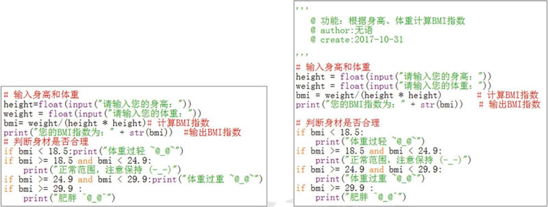
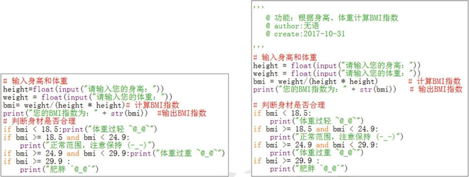

首页 > Python > Python编程环境搭建
Python编码规范（PEP 8）
在讲解具体的 Python 编码规范之前，先来看看图 1 中的代码：

图 1 两段功能相同的 Python 代码
对比图 1 中的两段代码你会发现，它们所包含的代码时完全相同的，但很明显，右侧的代码编写格式看上去比左侧的代码段更加规整，阅读起来也会比较轻松、畅快，因为它遵循了最基本的 Python 代码编写规范。
Python 采用 PEP 8 作为编码规范，其中 PEP 是 Python Enhancement Proposal（Python 增强建议书）的缩写，8 代表的是 Python 代码的样式指南。下面仅给大家列出 PEP 8 中初学者应严格遵守的一些编码规则：
以上就是初学者应该遵循的部分 Python 编码规范，如果想了解更多 PEP 8 的详细信息，可访问 PEP 8官方介绍。

图 1 两段功能相同的 Python 代码
对比图 1 中的两段代码你会发现，它们所包含的代码时完全相同的，但很明显，右侧的代码编写格式看上去比左侧的代码段更加规整，阅读起来也会比较轻松、畅快，因为它遵循了最基本的 Python 代码编写规范。
Python 采用 PEP 8 作为编码规范，其中 PEP 是 Python Enhancement Proposal（Python 增强建议书）的缩写，8 代表的是 Python 代码的样式指南。下面仅给大家列出 PEP 8 中初学者应严格遵守的一些编码规则：
-
每个 import 语句只导入一个模块，尽量避免一次导入多个模块，例如：
#推荐 import os import sys #不推荐 import os,sys
关于 import 的含义和用法会在后续介绍，这里不必深究。 -
不要在行尾添加分号，也不要用分号将两条命令放在同一行，例如：
#不推荐 height=float(input("输入身高：")) ; weight=fioat(input("输入体重：")) ; -
建议每行不超过 80 个字符，如果超过，建议使用小括号将多行内容隐式的连接起来，而不推荐使用反斜杠 \ 进行连接。例如，如果一个字符串文本无法实现一行完全显示，则可以使用小括号将其分开显示，代码如下：
#推荐 s=("C语言中文网是中国领先的C语言程序设计专业网站，" "提供C语言入门经典教程、C语言编译器、C语言函数手册等。") #不推荐 s="C语言中文网是中国领先的C语言程序设计专业网站，\ 提供C语言入门经典教程、C语言编译器、C语言函数手册等。"注意，此编程规范适用于绝对大多数情况，但以下 2 种情况除外：- 导入模块的语句过长。
- 注释里的 URL。
- 使用必要的空行可以增加代码的可读性，通常在顶级定义（如函数或类的定义）之间空两行，而方法定义之间空一行，另外在用于分隔某些功能的位置也可以空一行。比如说，在图 1 右侧这段代码中，if 判断语句同之前的代码多实现的功能不同，因此这里可以使用空行进行分隔。
- 通常情况下，在运算符两侧、函数参数之间以及逗号两侧，都建议使用空格进行分隔。
以上就是初学者应该遵循的部分 Python 编码规范，如果想了解更多 PEP 8 的详细信息，可访问 PEP 8官方介绍。
关注公众号「站长严长生」，在手机上阅读所有教程，随时随地都能学习。内含一款搜索神器，免费下载全网书籍和视频。

微信扫码关注公众号